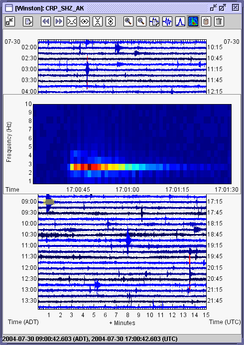
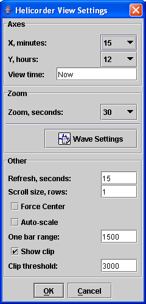

Section IV, Helicorder Views
User Interface
Swarm is also a tool for interacting with and displaying helicorders. Here is a typical helicorder view (actually,
this is smaller size than typical in order to fit into the manual better):

The view consists of a window displaying the data source '[Winston]' and the channel 'CRP_SHZ_AK'. In the window is the helicorder,
bordered on the top by a toolbar and on the bottom by a status bar that shows the time under the mouse cursor.
The spectrogram inside the helicorder was generated when the user clicked on the helicorder. A small transparent yellow
box under the inset wave view shows the area that is being magnified.
Helicorders derived from an active source, like a Wave Server or Winston connection, will automatically update themselves when new
data are available.
Helicorder View Settings Dialog
There are two main ways in which you can interact with the a helicorder view: manipulating the helicorder view itself or zooming
in and looking at the underlying waveform. All of the settings for the helicorder view can be manipulated in the helicorder
view settings dialog which can be opened by clicking on this button: . The settings dialog
box looks like this:

Axes Options
These settings effect the size of the X and Y axes. The X axis determines the number of minutes to display along the bottom.
Legal values are 10, 15, 20, 30, 60, 120, 180, and 360. Values above 60 are seldom used. The Y axis determines how much total
time to display on the helicorder and is measured in hours. Legal values are 2, 4, 6, 12, 24, 48, 72, and 168. The default settings
generate a 12 hour helicorder with 15 minutes rows.
The last settings under Axes is 'View time'. This setting allows you to set the time at the bottom of the helicorder. By default
a helicorder view opens with the bottom being set to 'Now'. The format for specifying the bottom view time is "YYYYMMDD" or, if more
resolution is needed, "YYMMDDHHMMSS".
Zoom Options
The zoom settings allow you to customize the display of the zoomed waveform view. The first setting, 'Zoom' determines the amount of time
on either side of the mouse cursor to zoom. Also available is a button to display the Wave
View Settings Dialog.
Other Options
These settings configure various other options for the helicorder view. 'Refresh' is the number of seconds between attempts to refresh
the helicorder with the latest data, the default value is 15. 'Scroll size' is the number of helicorder rows to scroll up or down on user's
scroll requests with the mouse-wheel or the scroll toolbar buttons. The next option 'Force Center' forces each helicorder sample to be centered
on its current line. This effectively eliminates all drift and is useful for broadband stations with lots of
low frequency energy. Use this feature with caution though: it can make an obviously false signal look like an earthquake. 'Auto-scale'
toggles helicorder auto-scaling on and off. When auto-scaling is on an attempt is made to produce a "pleasant" looking helicorder. If this
fails, or if you want more control over the appearance of the helicorder, set the 'One bar range'. The 'One bar range' is the number of counts
on either side of zero that make up one bar. For example, if you have a seismometer that reports counts between -3600 and 3600 and you select
a bar range of 1200, a full-range waveform will take 3 bars, overlapping one above and one below. This is best understood through experimentation.
The last options are 'Show clip' and 'Clip threshold'. This allows you to set a counts threshold after which the trace will be shown in red.
Toolbar and Keyboard Interaction
There is toolbar full of buttons at the top of each helicorder. Here is a description of each button:
 - Minimizes the toolbar, maximizing screen real-estate for the helicorder.
- Minimizes the toolbar, maximizing screen real-estate for the helicorder.
- Opens the settings dialog.
 - Scrolls the display (helicorder or wave inset) back in time. Keyboard shortcut: A
- Scrolls the display (helicorder or wave inset) back in time. Keyboard shortcut: A
- Scrolls the display (the helicorder or wave inset) back in time. Keyboard shortcut: Z
 - Decreases number of minutes on the X axis. Keyboard shortcut: Alt-Left arrow
- Decreases number of minutes on the X axis. Keyboard shortcut: Alt-Left arrow
 - Increases number of minutes on the X axis. Keyboard shortcut: Alt-Right arrow
- Increases number of minutes on the X axis. Keyboard shortcut: Alt-Right arrow
- Decreases amount of time on the Y axis. Keyboard shortcut: Alt-Down arrow
 - Increases amount of time on the Y axis. Keyboard shortcut: Alt-Up arrow
- Increases amount of time on the Y axis. Keyboard shortcut: Alt-Up arrow
 - Decreases zoom window size (zooms in). Keyboard shortcut: +
- Decreases zoom window size (zooms in). Keyboard shortcut: +
 - Increases zoom window size (zooms out). Keyboard shortcut: -
- Increases zoom window size (zooms out). Keyboard shortcut: -
 - Opens the Wave View Settings Dialog for the inset wave view. Keyboard shortcut: ?
- Opens the Wave View Settings Dialog for the inset wave view. Keyboard shortcut: ?
 - Chooses wave view for the inset wave view. Keyboard shortcut: W or ,
- Chooses wave view for the inset wave view. Keyboard shortcut: W or ,
- Chooses spectra view for the inset wave view. Keyboard shortcut: S or .
 - Chooses spectrogram view for the inset wave view. Keyboard shortcut: G or /
- Chooses spectrogram view for the inset wave view. Keyboard shortcut: G or /
 - Copies inset wave view to the Wave Clipboard. Keyboard shortcut: C or Control-C
- Copies inset wave view to the Wave Clipboard. Keyboard shortcut: C or Control-C
 - Removes the inset wave view. Keyboard shortcut: Escape or Delete
- Removes the inset wave view. Keyboard shortcut: Escape or Delete
Also, when an inset wave view is open the standard keys for interacting with wave views are active.